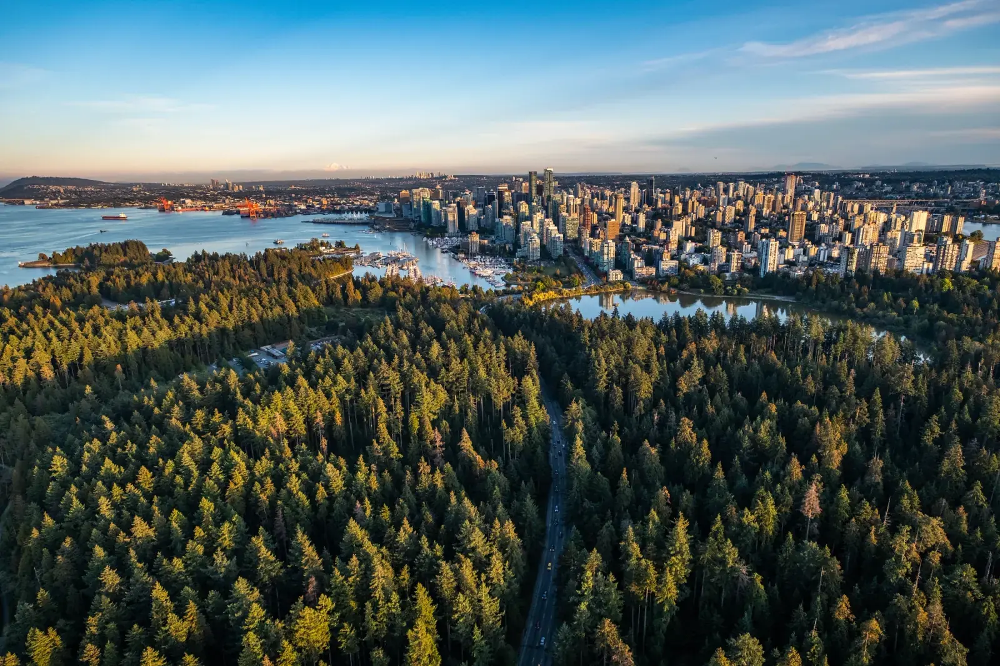
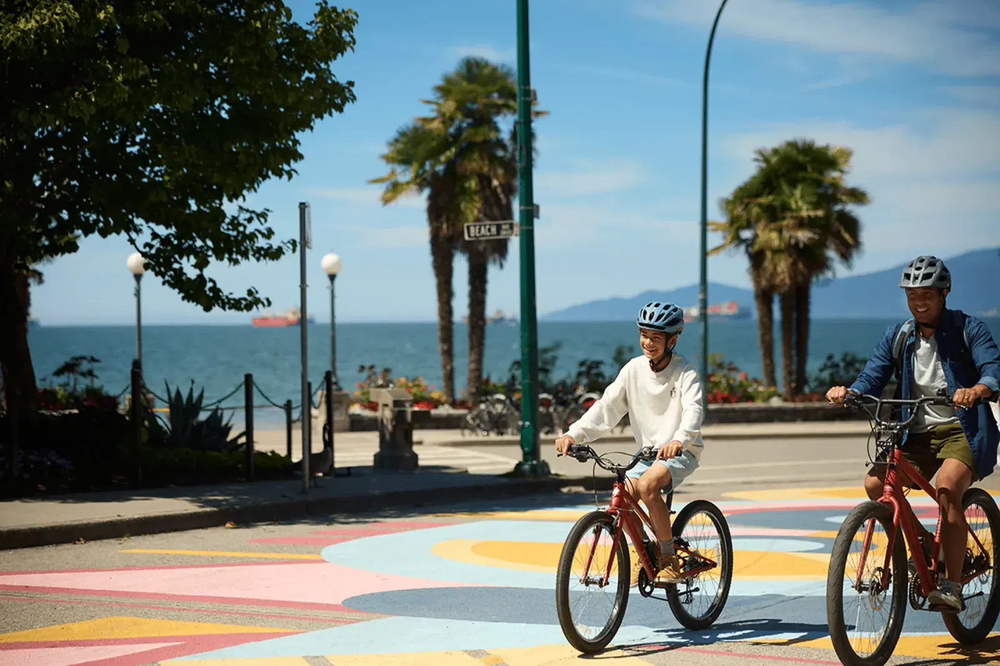
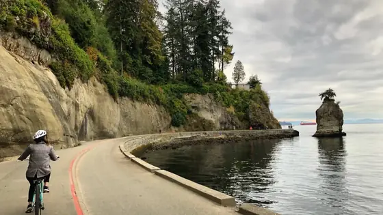
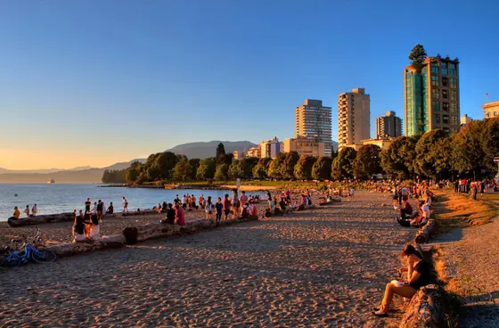
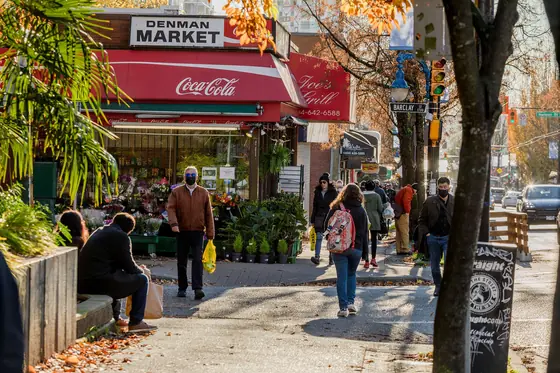
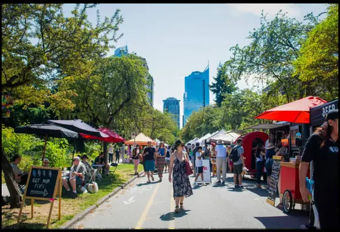
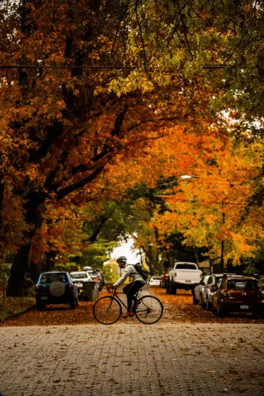
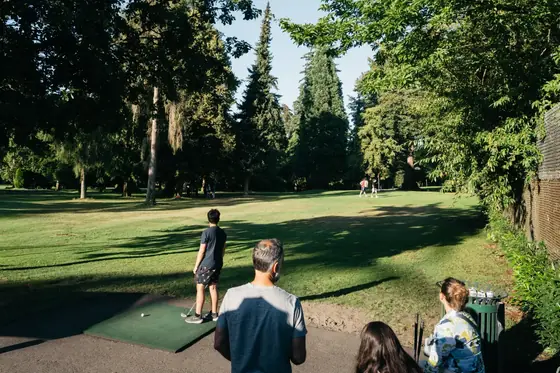

Ocean, forest and city, all on foot
One of Vancouver's oldest neighbourhoods and the front door to Stanley Park. Beaches on two sides, tree-lined streets, and downtown a short walk away.
Photo: Destination Vancouver

The beach at the end of the street
English Bay is the West End's living room: sunset on the logs, the bathhouse and the laughing statues in Morton Park, the summer fireworks over the water and the Polar Bear Swim every New Year's Day. From our buildings it's a two- to six-minute walk.
Photo: Destination Vancouver
Why people stay for years
Towers and heritage homes side by side, parks on every few blocks, and some of the city's best food streets.

Walk, run or cycle around the park on the seawall, past Siwash Rock and Third Beach, or get lost on the forest trails.
Photo: Destination Vancouver

Two city beaches joined by the seawall, with the best sunsets in Vancouver. Sunset Beach is across the street from Elliot Towers.

Groceries, cafés and restaurants from every corner of the world, and Davie Village, the heart of the city's LGBTQ+ community with its rainbow crosswalks.

Local produce, bread, flowers and food trucks in Nelson Park through the warmer months.
Photo: Destination Vancouver

Mature trees, pocket parks and public art, with heritage houses like Barclay Heritage Square and Roedde House between the towers.
Photo: Destination Vancouver

Eighteen short holes under the trees, plus tennis courts and Second Beach pool close by.
Photo: Destination Vancouver
Getting around
Times are approximate.
Our buildings and what's around them
Photos marked "Destination Vancouver" are from destinationvancouver.com and appear here only to illustrate this concept.
Want to see it for yourself?
Book a viewing and take a walk around the block afterwards. It’s the best way to choose.